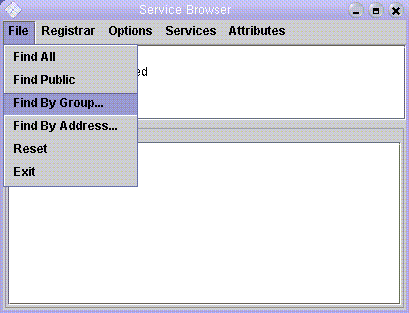
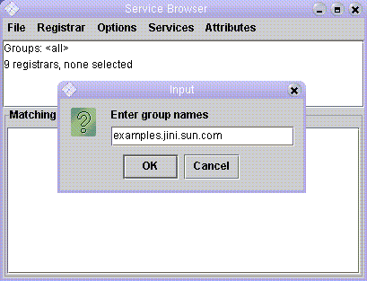
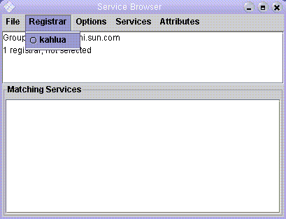
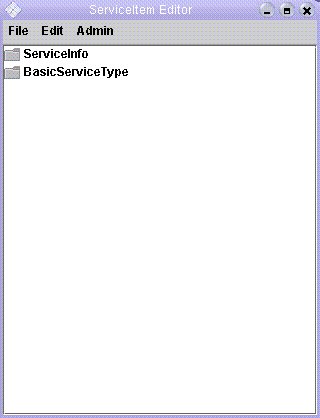
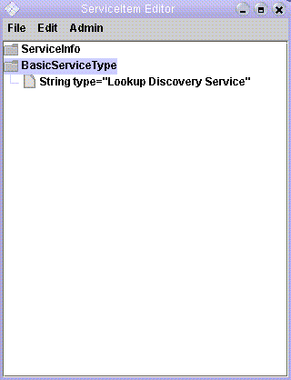
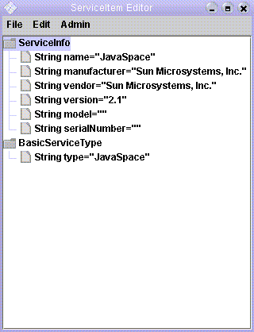

|
|||||||||||
| PREV PACKAGE NEXT PACKAGE | FRAMES NO FRAMES | ||||||||||
See:
Description
| Class Summary | |
| Browser | Example service browser. |
| Browser.Exit | A simple action listener that calls System.exit. |
A visualization tool for exploring Jini(TM) Network Technology communities (djinns). The Service Browser lets you discover lookup services and inspect the various services registered within those lookup services. This tool is provided as an example program within the Jini Technology Starter Kit (starter kit) but many who use it think of it more as a utility than an example.
This document provides the following information about the Service Browser:
% java java_options
-jar install_dir/lib/browser.jar
config_options
Configuration provider options. The
Service Browser can be run with no config_options.
For the RMI codebase annotation,
the system property java.rmi.server.codebase should be set to
two URLs that provide HTTP-based access to the Service Browser's download
JAR files,
install_dir/lib-dl/browser-dl.jar and
install_dir/lib-dl/jsk-dl.jar, in that order.
The Service Browser also can be run as a nonactivatable entity under the
Service Starter, using
com.sun.jini.example.browser.Browser for the implementation
class, install_dir/lib/browser.jar for the
implementation class path, and a codebase containing URLs for
install_dir/lib-dl/browser-dl.jar and
install_dir/lib-dl/jsk-dl.jar (in that order).
The Service Browser presents a single window when it is started. The window has the menu items File, Registrar, Options, Services, and Attributes. The upper text area changes to show which groups and/or addresses are being used for discovery and how many lookup services have been discovered. The picture below shows a typical Service Browser main window, in which nine lookup services have been discovered, but none have yet been selected.
As lookup services are discovered, they appear under the Registrar menu, listed by unicast address. A specific lookup service can then be selected from this menu for browsing. When a lookup service is selected, the upper text area will be revised to show the number of services registered in that lookup service, and the lower folder area will show the registered services. Administrable services are shown with a blue icon, and non-administrable services are shown with a gray icon. As new services register or existing services unregister, the contents of the window will change automatically to reflect them.
After initial start up, different lookup services can be discovered using several items available from the File menu:
public group.For example, the picture below shows the dialog box presented when the Find By Group... menu item is selected.

In this next picture, the group name examples.jini.sun.com
will be entered.

After the group examples.jini.sun.com has been entered, a list of
discovered lookup services will appear in the Registrar menu.
In this example, only the host
kahlua has a lookup service running that is a member of
examples.jini.sun.com, so kahlua is the only
address in the drop-down list from the Registrar menu.

When kahlua is selected from the Registrar
menu, the window contents change as shown in the next picture.
In this example, six services are registered:

The window shows all of the attribute sets
that can be inspected and, in some cases, altered. Attribute sets and
attributes with blue icons can be edited, those with gray icons cannot.
An attribute set can be edited if it is not
ServiceControlled and the service's
administrative proxy implements the JoinAdmin interface.
Within an editable attribute set, an attribute can be edited if it is of
type String or one of the primitive wrapper classes.
The two attribute sets shown in the example above are ServiceInfo
and BasicServiceType.
Each of these entries can be expanded by double-clicking on them
as illustrated in the next two pictures.
Expanding the BasicServiceType entry:

Expanding the ServiceInfo entry:

Double clicking again on an entry collapses the view. In an expanded entry,
double clicking on an editable attribute brings up a dialog box that
allows you to input a new value for the attribute. You can also use
the Edit menu in the ServiceItem Editor window to
add and remove attribute sets, if the service's administrative proxy
implements the JoinAdmin interface.
Select Add attribute... from the Edit menu to add an
attribute set. (Note that for this to work, you will have to run the
Service Browser in such a way that the desired attribute set classes
are in both its class path and its codebase.)
Click on an attribute set and then select Remove attribute from
the Edit menu to delete an attribute set.
Similarly, the Attributes menu shows attribute set classes (with
package prefixes removed) that can be added to your current template to
refine the set of services.
When you select a class, it appears in the upper text area to
show you what your new template contains, the revised number of
matching services is shown, and only the services with such an attribute
set are displayed in the lower area. In addition, the selected menu item
changes to a pull-aside menu.
You can go back to the Attributes menu to select
additional attribute set classes, or traverse a pull-aside menu to
see the names of attributes, each of which is itself a pull-aside
menu. You can traverse these to see the possible values for the
attributes, and select one to further refine your search. You
can deselect existing attribute choices, and you can deselect
the (match) menu item to deselect an entire class.
By default, the Services menu only shows service interface types. You can select Service classes from the Options menu to see service implementation classes instead. By default, only the most-derived interfaces or classes are shown, but you can select Service supertypes from the Options menu to see supertypes as well. Similarly, by default only the most-derived attribute set classes are shown in the Attributes menu, but you can select Attribute supertypes from the Options menu to see superclasses as well.
Select Reset from the File menu of the main window to reset the template to the initial (empty) state.
JavaSpace05 interface or its administrative proxy
implements the JavaSpaceAdmin
interface, selecting Browse Entries from this menu brings up a
window that displays all of the current entries.
In a ServiceItem Editor window, the Admin menu allows
various administrative operations to be performed on the service.
If the service's administrative proxy implements the
JoinAdmin interface,
you can use the Joining groups... and Joining locators...
menu items to control which lookup groups and lookup locators the
service uses for lookup discovery and join.
If the service is itself a lookup service and its administrative proxy
implements the DiscoveryAdmin interface, you can use
the Member groups... menu item to control
which groups the lookup service is a member of, and you can
use the Unicast port... menu item to control
which unicast port the lookup service uses for its lookup locator.
If the service's administrative proxy implements the
DestroyAdmin
interface, you can use the Destroy menu item to destroy the
service. This last menu selection is illustrated in the picture below.
ConfigurationProvider.getInstance with the config_options
specified on the command line and the class loader for the main
implementation class.
The Service Browser supports the following configuration
entries, with component com.sun.jini.example.browser:
| • |
adminPreparer
| |
|---|---|---|
| Type: | ProxyPreparer
| |
| Default: |
new
| |
| Description: | Prepares administrative proxies obtained by calling
the Administrable.getAdmin
method on service proxies. The value should not be null.
The Service Browser only calls methods on an administrative proxy if
administrative operations are performed using menu items. Methods of
the JoinAdmin,
DiscoveryAdmin,
DestroyAdmin, and
JavaSpaceAdmin interfaces can be invoked.
| |
| • |
discoveryManager
| |
|---|---|---|
| Type: | DiscoveryManagement
| |
| Default: |
new | |
| Description: | Supplies the object used to discover lookup services.
The value should not be null. The object returned must
also implement DiscoveryGroupManagement and
DiscoveryLocatorManagement, and should be
configured initially to discover no groups and no specific lookup
services.
| |
| • |
exitActionListener
| |
|---|---|---|
| Type: | ActionListener
| |
| Default: | see the Browser
constructors for details
| |
| Description: | The action listener for the Exit item of the File menu. | |
| • |
folderView
| |
|---|---|---|
| Type: | boolean
| |
| Default: | true
| |
| Description: | Controls the format of the main window.
If true, the main window is split into two areas
as described in the rest of this documentation. If false,
the main window a single text area, and many of the browsing and
administrative operations are not available; the Show Matches
item of the File menu must be used to display services
registered in the selected lookup service.
| |
| • |
initialLookupGroups
| |
|---|---|---|
| Type: | String[]
| |
| Default: | null
| |
| Description: | The names of the lookup groups that the Service
Browser should initially discover. An empty array specifies that no groups
should be discovered. A null value specifies that all
lookup services should be discovered. Otherwise, the value specifies the
names of the groups to discover. The array must not contain
null elements. This entry used when the Service Browser is
first started; after initial startup, lookup service discovery is
controlled through the File menu.
| |
| • |
initialLookupLocators
| |
|---|---|---|
| Type: | | |
| Default: | null
| |
| Description: | The locators for specific lookup services that
the Service Browser should initially discover. An empty array or
null specifies that no specific lookup services
should be discovered. The array must not contain null
elements. This entry is used when the Service Browser is first started;
after initial startup, lookup service discovery is controlled through
the File menu.
Note that the constraints specified in the | |
| • |
leaseManager
| |
|---|---|---|
| Type: | LeaseRenewalManager
| |
| Default: | new LeaseRenewalManager(this /* config */)
| |
| Description: | Supplies the lease renewal manager used to
renew leases for remote event registrations and when obtaining the
entries of a JavaSpaces service. The value should not be
null.
| |
| • |
leasePreparer
| |
|---|---|---|
| Type: | ProxyPreparer
| |
| Default: |
new
| |
| Description: | Prepares leases obtained from registering
for event notifications with lookup services and from requesting
the entries of a JavaSpaces service. The value should not be
null.
The Service Browser calls the | |
| • |
listenerExporter
| |
|---|---|---|
| Type: | Exporter
| |
| Default: |
new | |
| Description: | The object to use for exporting all
RemoteEventListener instances used
by the Service Browser when registering for event notifications from
lookup services. The value should not be null.
| |
| • |
locatorConstraints
| |
|---|---|---|
| Type: | MethodConstraints
| |
| Default: | null
| |
| Description: | Constraints to attach to any
LookupLocator instances constructed
from the addresses entered using the Find By Address... menu item.
These constraints are not attached to the locators obtained from the
| |
| • |
loginContext
| |
|---|---|---|
| Type: | LoginContext
| |
| Default: | null
| |
| Description: | Specifies the JAAS login context to use for
performing a JAAS login and supplying the
Subject to use when running the
Service Browser. If null, no JAAS login is performed
and no subject is used.
| |
| • |
servicePreparer
| |
|---|---|---|
| Type: | ProxyPreparer
| |
| Default: |
new
| |
| Description: | Prepares service proxies obtained from lookup servics.
The value should not be null. The Service Browser
calls the Administrable.getAdmin method on a service proxy for most
administrative operations, and calls the
JavaSpace05.contents
method on a JavaSpaces service proxy to browse entries.
| |
| • |
uninterestingInterfaces
| |
|---|---|---|
| Type: | String[]
| |
| Default: |
new String[]{
"java.io.Serializable",
"java.rmi.Remote",
"net.jini.admin.Administrable",
"net.jini.core.constraint.RemoteMethodControl",
"net.jini.id.ReferentUuid"}
| |
| Description: | Supplies the set of interface names that are not
interesting to choose when displaying service instances the lower
area of the main window. If the service proxy implements exactly
one interface that is not in this list, the name of that interface
is used to name the service, otherwise the concrete class of the
service proxy is used. The value should not be null.
| |
Note that additional entries can also be specified to configure the
LeaseRenewalManager,
LookupDiscovery, and
LookupLocatorDiscovery components. For
example, the Service Browser assumes you have configured the discovery
manager (obtained from the discoveryManager configuration
entry) to enforce any desired constraints for multicast discovery
and to perform any desired proxy preparation for all discovered lookup
services.
The most commonly used configuration entries are likely to be:
Secure deployments typically will provide values for most of the following configuration entries:
plus the following configuration entries forLookupDiscovery
(if groups are used for discovery):
registrarPreparer
discoveryConstraints
LookupLocatorDiscovery
(if locators are used for discovery):
registrarPreparer
Logger named
com.sun.jini.example.browser to log
information at the following logging levels:
| Level | Description |
|---|---|
SEVERE | Problems that prevent Service Browser startup |
INFO | Potentially interesting exceptions that occur when performing operations |
HANDLED | Less interesting exceptions that occur when performing operations |
See the LogManager class for one way to use the
HANDLED logging level in standard logging configuration files.
% java -Djava.security.policy=browser.policy
-Djava.rmi.server.codebase="http://your_host:http_port/browser-dl.jar http://your_host:http_port/jsk-dl.jar"
-Djava.protocol.handler.pkgs=net.jini.url
-jar install_dir/lib/browser.jar
lib
subdirectory of install_dir, the directory where the
starter kit is installed.
When the Service Browser is run this way, without a configuration file, it
will perform multicast discovery to find all available lookup
services, and will use Jini extensible remote invocation (Jini ERI)
over TCP/IP for its remote event listeners.
An example command line for starting the Service Browser with a configuration file is:
% java -Djava.security.policy=browser.policy
-Djava.rmi.server.codebase="http://your_host:http_port/browser-dl.jar http://your_host:http_port/jsk-dl.jar"
-Djava.protocol.handler.pkgs=net.jini.url
-jar install_dir/lib/browser.jar
public.config
public.config only discovers
lookup services in the public group:
com.sun.jini.example.browser {
initialLookupGroups = new String[]{""};
}
The following example configuration file initially discovers no lookup services and uses JRMP for its remote event listeners:
com.sun.jini.example.browser {
initialLookupGroups = new String[]{};
listenerExporter = new net.jini.jrmp.JrmpExporter();
}
In all the above command lines, the policy file browser.policy
was specified for the java.security.policy system property.
An example policy file is:
grant codebase "file:install_dir/lib/browser.jar" {
permission java.security.AllPermission;
};
grant codebase "file:install_dir/lib/jsk-platform.jar" {
permission java.security.AllPermission;
};
grant codebase "file:install_dir/lib/jsk-lib.jar" {
permission java.security.AllPermission;
};
grant {
permission java.net.SocketPermission "*:1024-", "connect";
};
Note: Of course, a more restrictive policy file could be used; the one shown here is for illustrative purposes only.
An example of running under the Service Starter is:
% java -Djava.security.policy=start.policy
-Djava.protocol.handler.pkgs=net.jini.url
-jar install_dir/lib/start.jar
start.config
where start.config is the following configuration file:
import com.sun.jini.start.NonActivatableServiceDescriptor;
import com.sun.jini.start.ServiceDescriptor;
com.sun.jini.start {
serviceDescriptors = new ServiceDescriptor[]{
new NonActivatableServiceDescriptor(
"http://your_host:http_port/browser-dl.jar http://your_host:http_port/jsk-dl.jar",
"browser.policy",
"install_dir/lib/browser.jar",
"com.sun.jini.example.browser.Browser",
new String[]{"public.config"})
};
}
start.policy is:
grant codebase "file:install_dir/lib/start.jar" {
permission java.security.AllPermission;
};
grant codebase "file:install_dir/lib/jsk-platform.jar" {
permission java.security.AllPermission;
};
|
|||||||||||
| PREV PACKAGE NEXT PACKAGE | FRAMES NO FRAMES | ||||||||||